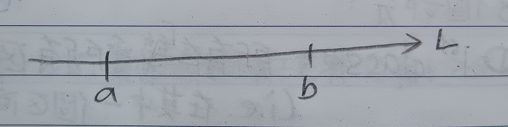
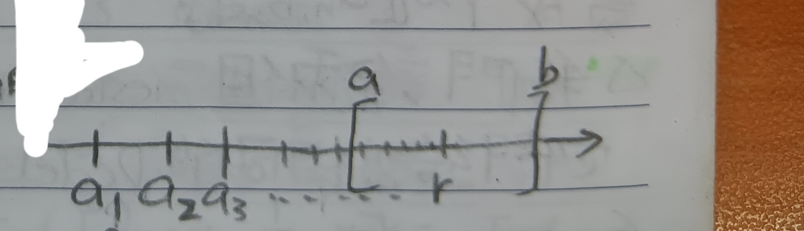
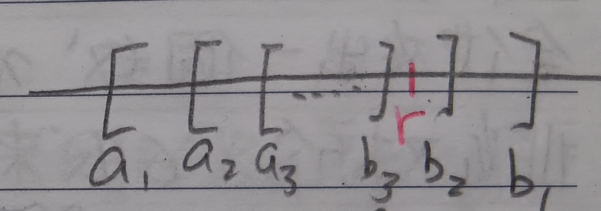

這裡我們假設我們已經熟悉有理數的構造與性質了，我們希望從有理數開始建構實數。(若要看如何建構自然數與有理數，可以點[這裡])
有理數的區間
首先，這裡會定義兩種區間
定義 1：有理數的區間 (Intervals of Rational Numbers)
定義 1-1：開區間 (Open Interval)
對於有理數\(a<b\)，定義其中的開區間為\((a,b)=\{x|a<x<b\}\)(見下圖1)。
定義 1-2：閉區間 (Closed Interval)
對於有理數\(a<b\)，定義其中的開區間為\([a,b]=\{x|a\leq x\leq b\}\)(見下圖1)。
註記 1-3
在以上的兩個定義中，因為還沒定義有理數以外的數如何比大小，所以集合中蒐集的\(x\)都只有有理數。
註記 2：有理數的稠密性 (Denseness of Rational Numbers)
任何兩個有理數之間都有有理數。寫作數學語言就是： \[\forall p,q\in\mathbb{Q}, \exists r\in\mathbb{Q}\mbox{ such that }r\in (p,q)\]
有理數列的極限
定義 3：幾乎所有 (Almost All)
一命題對於幾乎所有\(n\)都成立的意思是除了有限多個\(n\)以外，此命題對所有\(n\)都成立。
定義 4：有理數列的極限 (Limit of Rational Number Sequences)
給定有理數列\(a_1,a_2,\cdots\)及另一有理數\(r\)，如果每個包含\(r\)的有理區間\([a,b]\)都包含幾乎所有的\(a_n\)，則稱數列\(a_n\)的極限是\(r\)(見下圖2)。記為 \[\lim_{n\to\infty}a_n=r\]
定義 4-1：零序列 (Null Sequence)
若\(\lim\limits_{n\to\infty}a_n=0\)。則稱\(\{a_n\}\)為零序列。
定義 5：巢狀區間 (Nested Intervals)
給定一系列有理閉區間\([a_1,b_1],[a_2,b_2],\cdots\)。如果這些區間符合：
1. \([a_{n+1},b_{n+1}]\subseteq[a_n,b_n]\) for
all \(n\in\mathbb{N}\)
2. \(\lim\limits_{n\to\infty}(b_n-a_n)=0\)
那麼這樣的一系列區間就稱為巢狀區間(見下圖3)。
註記 5-1
給定\(r\in\mathbb{Q}\)和巢狀區間\([a_1,b_1],[a_2,b_2],\cdots\)。如果\(r\)落在某一個\([a_n,b_n]\)之外，則\(r\)也會落在接下來的所有區間之外(見下圖3)。寫成數學語言就是： \[\mbox{If }r\notin[a_n,b_n],\mbox{ then }\forall N>n, r\notin[a_N,b_N]\]
戴德金分割
定義 6：戴德金分割 (Dedekind Cut)
給定一串有理巢狀區間，我們將所有有理數分成以下三個類別：
第一組(1st Class)：所有在「幾乎所有區間左側」的有理數\(r\)
(由上註記5-1知此即在某一區間左側的有理數\(r\))。
第二組(2nd
Class)：所有在「每一個區間中」的有理數\(r\)。
第三組(3rd
Class)：所有在「幾乎所有區間右側」的有理數\(r\)
(由上註記5-1知此即在某一區間右側的有理數\(r\))。
註記 6-1
第二組不是空的就是只有一個有理數。
證明：如果第二組中有兩相異有理數\(r<r'\)，則\(\lim\limits_{n\to\infty}(b_n-a_n)\geq|r-r'|>0\)，這和巢狀區間的定義矛盾。QED
註記 6-2
若第二組非空，則第一組中的所有數\(<\)第二組中的所有數\(<\)第三組中的所有數
定義 7：巢狀區間的標記(Identification of Nested Intervals)
若巢狀區間\(\{[a_n,b_n]\}_{n=1}^\infty\)的第二組非空，則由註記6-2知第二組僅能有一個有理數。令該有理數為\(r\)，我們將這串巢狀區間標記為\(r\)，記為 \[r\sim\{[a_n,b_n]\}\]
定義 8：巢狀區間的等價(Equivalence of Nested Intervals)
若兩串巢狀區間給出一樣的戴德金分割(即三個類組都相同)，我們說這兩串巢狀區間等價。
例 8-1
考慮兩串巢狀區間 \[J_n=[r-\frac{1}{n},r+\frac{1}{n}]\] \[J'_n=[r-\frac{2}{n},r+\frac{2}{n}]\] 很容易可以看出這兩串巢狀區間等價。
實數的大小關係
定義 9：實數(Real Numbers)
一串巢狀區間\([a_n,b_n]\)可能不會夾出一個有理數(意即第二組為空)。我們定義它夾出一個數\(x\)，即\(x\sim\{[a_n,b_n]\}\)。所有被有理數巢狀區間夾出來的數，我們稱為實數。
定義 10：實數的大小關係(Ordering of Real Numbers)
定義 10-1：實數與有理數的大小關係(Ordering between Real and Rational Numbers)
給定巢狀區間\(\{[a_n,b_n]\}\)與實數\(x\sim\{[a_n,b_n]\}\)及有理數\(r\)。則我們定義：
1. \(r<x\) \(\Leftrightarrow\) \(r\)在第一組 \(\Leftrightarrow\) 對於幾乎所有\(n\)，有\(r<a_n\)
2. \(r=x\) \(\Leftrightarrow\) \(r\)在第二組 \(\Leftrightarrow\) 對於所有\(n\)，有\(a_n\leq
r\leq b_n\)
3. \(r>x\)
\(\Leftrightarrow\) \(r\)在第三組 \(\Leftrightarrow\) 對於幾乎所有\(n\)，有\(r>b_n\)
定義 10-2：實數間的大小關係(Ordering between Real Numbers)
給定兩串有理巢狀區間及兩實數\(x\sim\{[a_n,b_n]\}\), \(y\sim\{[\alpha_n,\beta_n]\}\)。則我們定義：
1. \(x<y\) \(\Leftrightarrow\) 存在\(r\in\mathbb{Q}\)使得\(x<r<y\) \(\Leftrightarrow\) 存在\(r\in\mathbb{Q}\)使得\(r\)在\(\{[a_n,b_n]\}\)的第三組，且在\(\{[\alpha_n,\beta_n]\}\)的第一組
2.
\(x=y\) \(\Leftrightarrow\) \(\{[a_n,b_n]\}\)和\(\{[\alpha_n,\beta_n]\}\)等價
3. \(x>y\) \(\Leftrightarrow\) \(y<x\)
註記 10-3
很容易可以看出實數的大小關係定義和原本有理數的大小關係是相容的。意即對於有理數\(r,s\)，若本來在有理數大小關係的定義下有\(r>s\)，則在實數大小關係的定義下也有\(r>s\) (\(r=s\)和\(r<s\)同理)。
定理 11
給定兩實數\(x,y\)。若\(x\neq y\)，則\(x>y\)或\(x<y\)。
證明：若\(y\in\mathbb{Q}\)，則由定義\(y\)落在\(x\sim\{[a_n,b_n]\}\)的第一組或第三組中，前者有\(y<x\)，後者有\(y>x\)(定義10-1)(若\(y\)落在第二組中的話就有\(x=y\)了，與假設不符。)
若\(y\notin\mathbb{Q}\)，則\(x\)的第二組和\(y\)的第二組都是空的(定義9)，又由\(x\neq y\)知\(x\sim\{[a_n,b_n]\}\)和\(y\sim\{[\alpha_n,\beta_n]\}\)給出不同的戴德金分割。故存在\(r\in\mathbb{Q}\)使得\(r\in(x\)的第一組\()\cap(y\)的第三組\()\)或\(r\in(x\)的第三組\()\cap(y\)的第一組\()\)。前者給出\(x>y\)，後者給出\(x<y\)。QED
定義 12：實數的區間(Intervals of Real Numbers)
給定實數\(x<y\)，我們現在可以定義開區間 \[(x,y)=\{r|r\in\mathbb{R},x<r<y\}\] 及閉區間 \[[x,y]=\{r|r\in\mathbb{R},x\leq r\leq y\}\]
實數的四則運算
定義 13：實數的四則運算(Arithmetic of Real Numbers)
給定實數\(x\sim\{[a_n,b_n]\}\)及\(y\sim\{[\alpha_n,\beta_n]\}\)，我們可以定義以下的運算：
定義 13-1：實數的加減法(Addition and Subtraction of Real Numbers)
定義 \[x\pm y\sim\{[a_n\pm\alpha_n,b_n\pm\beta_n]\}\]
定義 13-2：實數的乘法(Multiplication of Real Numbers)
當\(y>0\)時，我們定義 \[xy\sim\{[a_n\alpha_n,b_n\beta_n]\}\] 其他狀況只有區間端點前後順序不同，在此不贅述。
定義 13-3：實數的除法(Division of Real Numbers)
當\(x>0\)時，我們定義 \[\frac{1}{x}\sim\{[\frac{1}{a_n},\frac{1}{b_n}]\}\]
\(x<0\)時只有區間端點前後順序不同，在此不贅述。
(\(x=0\)時不定義\(1/x\))
註記 13-4
\[x<y\Leftrightarrow 0<y-x\]
定義 14：絕對值(Absolute Value)
給定一實數\(x\)，定義\(|x|=\left\{ \begin{aligned} x&,\mbox{ if }x\geq 0\\ -x&,\mbox{ if }x<0 \end{aligned} \right.\)
實數數列的極限
定義 15：實數數列的極限(Limit of Real Numeber Sequences)
和有理數數列極限的定義類似，給定實數列\(a_1,a_2,\cdots\)及另一實數\(r\)，如果每個包含\(r\)的實數區間\([a,b]\)都包含幾乎所有\(a_n\)，則稱數列\(a_n\)的極限是\(r\)(見上圖2)。記為 \[\lim_{n\to\infty}a_n=r\]
定義 15-1：實數數列的極限的等價定義
\(\lim\limits_{n\to\infty}x_n=x\)可以等價定義為：(每個包含\(x\)的區間，都包含幾乎所有\(x_n\)。)
實數的完備性
定理 16：實數的完備性 (Completeness of Real Numbers)
任何實數的巢狀區間都會夾出一個實數(實數是指有理數巢狀區間夾出來的數，見定義9)。
證明：給定一個數\(x\sim\{[x_n,y_n]\}\)，其中\(x_n,y_n\in\mathbb{R}\)，\(x_n\leq
y_n\)。我們想構造一串有理數巢狀區間\(\{[a_n,b_n]\}\)使得對於所有自然數\(n\)有\([x_n,y_n]\subseteq[a_n,b_n]\)(見下圖5)。
我們令\(a_n\)是小於等於\(x_n\)且形如\(\frac{p}{2^n}\)的最大有理數，\(b_n\)是大於等於\(y_n\)且形如\(\frac{q}{2^n}\)的最大有理數。因為形如\(\frac{k}{2^l}\)形式的有理數是稠密的，故當\(y_n-x_n\to 0\)時，會有\(b_n-a_n\to 0\)，所以\(\{[a_n,b_n]\}\)是一個巢狀區間，於是它會夾出一個實數\(x'\)(見定義9)。如果\(x'\)落在某個\([x_m,y_m]\)外，則不失一般性可以令\(x'<x_m\)，則存在\(r\in\mathbb{Q}\)使得\(x<r<x_m\)。然而也會有\(b_n\)使得\(x<b_n<r\)，所以給定\(n>m\)，有 \[y_n\leq b_n<r<x_m\leq x_n\] 這和\(x_n\leq y_n\)的假設矛盾，故\(x'\)落在所有的\(\{[x_n,y_n]\}\)中，即\(x'\)落在\(\{[x_n,y_n]\}\)第二組中(定義6)。但同時\(x\)也在\(\{[x_n,y_n]\}\)第二組中，但註記6-1說第二組至多只能有一個數，故有\(x=x'\in\mathbb{R}\Rightarrow\) 實數的巢狀區間一定會夾出一個實數。QED
實數的十進位表示法
實數的十進位表示法是一種選定有理巢狀區間的方式，步驟如下：
1.
選定整數\(c_0\)使得\(c_0\leq x\leq c_0+1\)
2. 把\([c_0,c_0+1]\)分成十等分，會存在\(c_1\in\{0,1,2,\cdots,9\}\)使得\(c_0+\frac{c_1}{10}\leq x\leq
c_0+\frac{c_1}{10}+\frac{1}{10}\)
3. 重複以上步驟，我們有
\[c_0+\frac{c_1}{10}+\frac{c_2}{10^2}+\cdots+\frac{c_n}{10^n}\leq
x\leq
c_0+\frac{c_1}{10}+\frac{c_2}{10^2}+\cdots+\frac{c_n+1}{10^n}\]
where \(c_i\in\{0,1,2,\cdots,9\},1\leq i\leq
n\)
這個過程會構造出一串有理巢狀區間\([c_0,c_0+1],[c_0+\frac{c_1}{10},c_0+\frac{c_1+1}{10}],[c_0+\frac{c_1}{10}+\frac{c_2}{10^2},c_0+\frac{c_1+1}{10}+\frac{c_2+1}{10^2}]\)
\(\Rightarrow\)這樣可以夾出一個實數\(x\)。